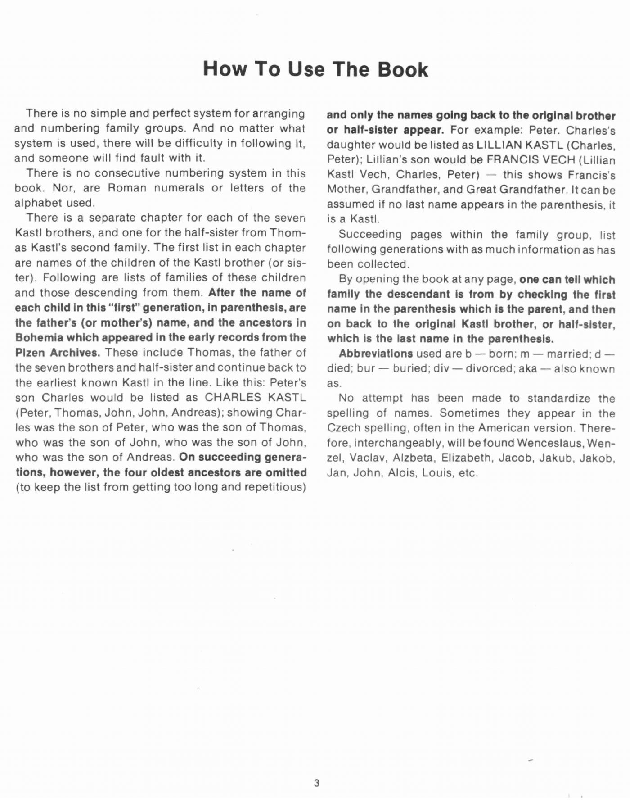

The book · How to Use the Book
Page 3 How To Use The Book


Transcription
How To Use The Book
There is no simple and perfect system for arranging and numbering family groups. And no matter what system is used, there will be difficulty in following it, and someone will find fault with it.
There is no consecutive numbering system in this book. Nor, are Roman numerals or letters of the alphabet used.
There is a separate chapter for each of the seven Kastl brothers, and one for the half-sister from Thomas Kastl's second family. The first list in each chapter are names of the children of the Kastl brother (or sister). Following are lists of families of these children and those descending from them. After the name of each child in this "first" generation, in parenthesis, are the father's (or mother's) name, and the ancestors in Bohemia which appeared in the early records from the Plzen Archives. These include Thomas, the father of the seven brothers and half-sister and continue back to the earliest known Kastl in the line. Like this: Peter's son Charles would be listed as CHARLES KASTL (Peter, Thomas, John, John, Andreas); showing Charles was the son of Peter, who was the son of Thomas, who was the son of John, who was the son of John, who was the son of Andreas. On succeeding generations, however, the four oldest ancestors are omitted (to keep the list from getting too long and repetitious) and only the names going back to the original brother or half-sister appear. For example: Peter. Charles's daughter would be listed as LILLIAN KASTL (Charles, Peter); Lillian's son would be FRANCIS VECH (Lillian Kastl Vech, Charles, Peter) — this shows Francis's Mother, Grandfather, and Great Grandfather. It can be assumed if no last name appears in the parenthesis, it is a Kastl.
Succeeding pages within the family group, list following generations with as much information as has been collected.
By opening the book at any page, one can tell which family the descendant is from by checking the first name in the parenthesis which is the parent, and then on back to the original Kastl brother, or half-sister, which is the last name in the parenthesis.
Abbreviations used are b — born; m — married; d — died; bur — buried; div — divorced; aka — also known as.
No attempt has been made to standardize the spelling of names. Sometimes they appear in the Czech spelling, often in the American version. Therefore, interchangeably, will be found Wenceslaus, Wenzel, Vaclav, Alzbeta, Elizabeth, Jacob, Jakub, Jakob, Jan, John, Alois, Louis, etc.
Transcriber’s notes
Two-column text; bold phrases in the print are preserved with **. Lower part of page blank. 'For example: Peter. Charles's daughter' punctuation as printed.